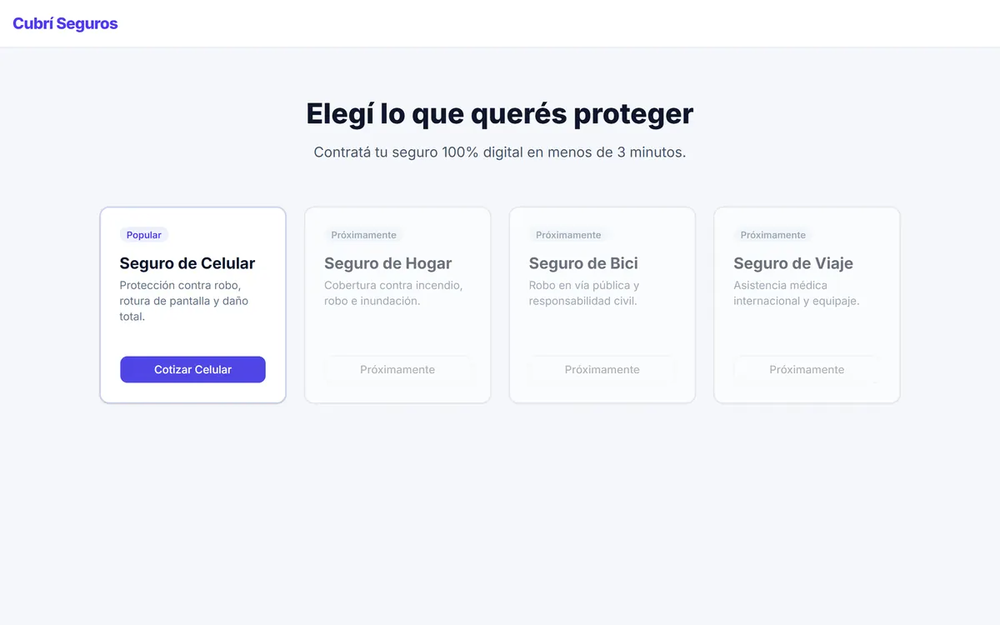
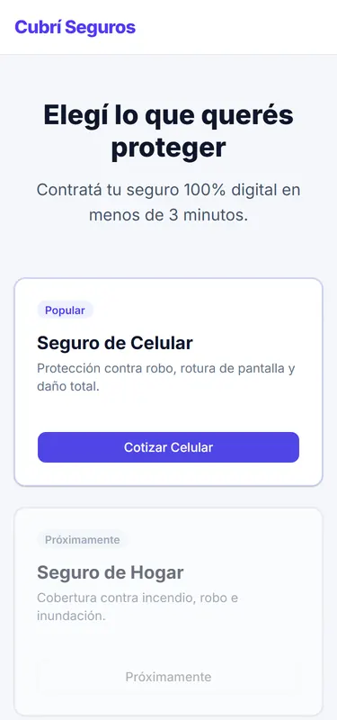
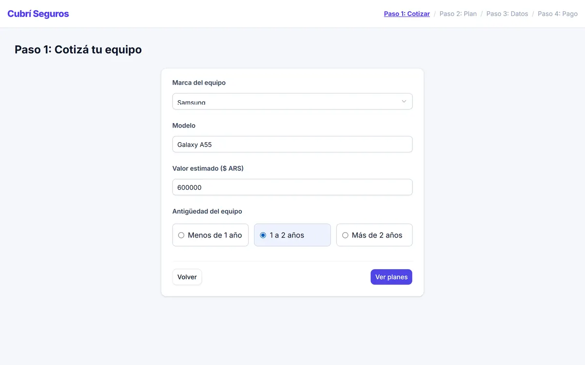
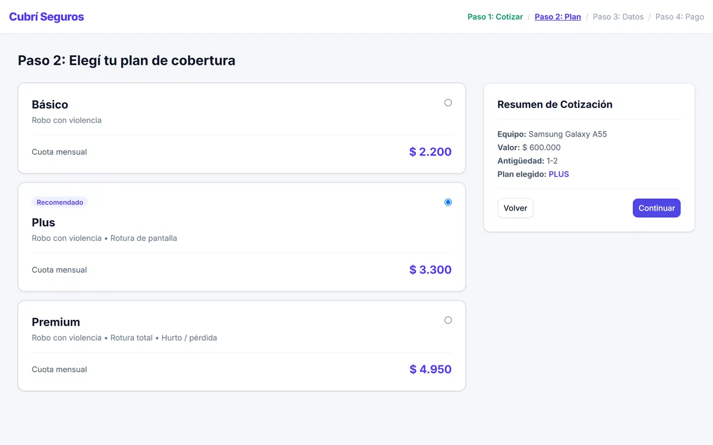

Caso de estudio · 2026
Cubrí Seguros
Un cotizador para contratar el seguro de un celular en 4 pasos, sin que un pago rechazado obligue a cargar todo de nuevo.
- Contexto
- TP 5 · Diseño UX-UI
- Mi rol
- Diseño y desarrollo
- Stack
- Tailwind v4 · JS · Basecoat UI
Problema
La consigna pedía el flujo de contratación de una aseguradora digital: elegir qué proteger, cotizar un celular, elegir un plan, cargar los datos y pagar. La promesa de la marca era “100% digital en menos de 3 minutos”.
En un flujo así, la persona abandona cuando no sabe cuánto le falta, cuando no entiende por qué un plan cuesta lo que cuesta o cuando un error la hace empezar de cero.
Qué tenía que resolver
- Mostrar la cuota de los 3 planes apenas se cargan los datos del equipo.
- Que el resumen de lo elegido esté siempre a la vista.
- Validar cada campo con un mensaje que diga cómo corregirlo.
- Si el pago falla, dejar reintentar sin perder nada.
Proceso
Un flujo de 6 pantallas
- Inicio: 4 productos. Solo el celular está habilitado; el resto dice “Próximamente” para no prometer lo que no existe.
- Cotizar: marca, modelo, valor y antigüedad del equipo.
- Plan: Básico, Plus (recomendado) y Premium, con la cuota calculada.
- Datos: nombre, DNI, nacimiento, email, celular y términos.
- Pago: tarjeta, vencimiento, CVV y titular.
- Resultado: éxito con número de póliza, o error con “Reintentar” y “Cambiar medio de pago”.
Un solo objeto con todo el estado
Toda la solicitud vive en un objeto, solicitud, en estado.js. Cada vez que cambia el paso, render.js vuelve a pintar la pantalla, el stepper y el resumen a partir de ese objeto. Por eso volver atrás o reintentar el pago no borra nada: los datos nunca estuvieron en la pantalla, estuvieron en el estado.
Separación de responsabilidades: app.js escucha eventos, render.js pinta, cotizador.js valida y calcula, y pago.js simula la respuesta del banco con una promesa de 1,5 segundos.
La fórmula, verificada
La cuota es valor × tasa anual ÷ 12 × factor de antigüedad, redondeada. El factor es 1 para menos de un año, 1,10 de 1 a 2 años y 1,25 para más de 2. La comprobé con los 3 casos de prueba de la cátedra:
| Valor y antigüedad | Básico | Plus | Premium |
|---|---|---|---|
| $600.000 · menos de 1 año | $2.000 | $3.000 | $4.500 |
| $600.000 · 1 a 2 años | $2.200 | $3.300 | $4.950 |
| $1.200.000 · más de 2 años | $5.000 | $7.500 | $11.250 |
Solución




Resultado y aprendizajes
Qué salió bien
- El estado centralizado hizo simple lo que parecía difícil: volver atrás, reintentar el pago y mantener el resumen al día.
- Los mensajes de error dicen qué hacer (“El valor debe estar entre $100.000 y $2.500.000”), no solo que algo está mal.
Qué mejoraría
- En mobile el stepper se oculta. Agregaría un “Paso 2 de 4” para que se sepa cuánto falta.
- Tailwind se carga con el script del navegador, que sirve para un práctico pero no para producción. Lo compilaría con la CLI.
- Al cambiar de paso movería el foco al título nuevo, para que un lector de pantalla anuncie dónde está.